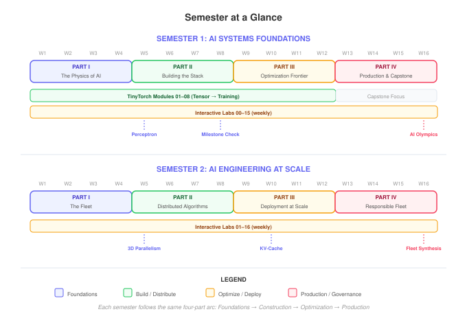

The AI Engineering Blueprint
Everything an instructor needs to teach AI Systems — two semesters of syllabi, interactive labs, a build-from-scratch framework, hardware kits, and a complete assessment system. Open-source and ready to adopt.
Course Materials
| Textbook | Two volumes: Foundations (1–8 GPUs) and At Scale (distributed fleets). HTML, PDF, EPUB. | Vol I · Vol II |
| TinyTorch | 20-module framework students build from scratch — tensors to transformers. 600+ auto-graded tests. | Browse → |
| Interactive Labs | 32 Marimo notebooks powered by mlsysim. Browser-based, zero GPU required. | Browse → |
| Hardware Kits | Arduino Nano 33 BLE, Raspberry Pi + Coral, Seeed XIAO ESP32S3. Optional but powerful. | Browse → |
| Lecture Slides | 35 Beamer decks with speaker notes, active learning, and 266 SVG diagrams. PDF and PowerPoint. | Browse → |
Teaching Resources
| Syllabi | Week-by-week schedules with linked readings, labs, and assignments for both semesters. | Sem 1 · Sem 2 |
| Assessment | Three-tier rubrics, sample student work, AI Olympics capstone spec, grading load estimates. | View → |
| Pedagogy | Prediction Locks, Decision Logs, the A→B→C lab structure, and the Iron Law audit framework. | View → |
| TA Guide | Grading workflows, common student struggles by week, lab facilitation, office hours protocol. | View → |
| Customization | 10-week quarter, 3-day workshop, graduate seminar, embedded/cloud emphases. | View → |
| FAQ | Prerequisites, setup, AI tools policy, hardware budgets, and adoption questions. | View → |
Syllabi

AI Systems Foundations
From one machine to eight accelerators. Students build TinyTorch from scratch and learn the Iron Law of hardware-software co-design.
Wk 1-4: Physics of AI · Wk 5-8: Building the Stack · Wk 9-12: Optimization · Wk 13-16: Production
Semester 2 · Volume IIAI Engineering at Scale
From one node to ten thousand. Distributed training, collective communication, and fleet infrastructure for frontier models.
Wk 1-4: The Fleet · Wk 5-8: Distributed Algorithms · Wk 9-12: Deployment · Wk 13-16: Governance
The Books
The two volumes students read. Free online in full, with hardcover editions published by MIT Press.

Companion Books
The MLSysBook curriculum is extended by open companion books authored by members of the TinyML4D Academic Network. These pair directly with the hardware kits used in Semester 1's labs, and are maintained by the original authors.